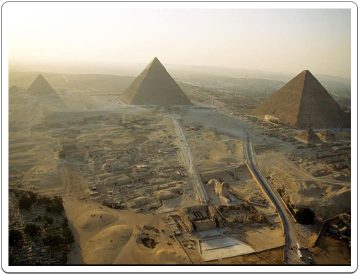
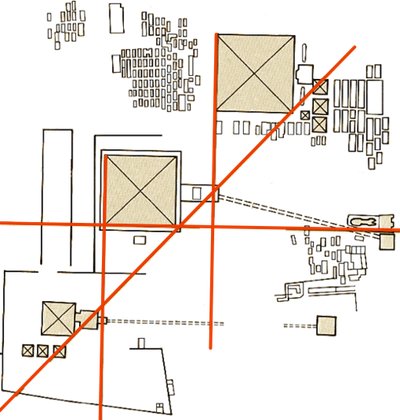

The Great Pyramids of Giza
Giza is located slightly to the south entrance of the Delta, at the point where the river starts dividing into several arms, on the West Bank of the Nile, to the west of Egypt's modern day capital of Cairo. One of the northernmost cemeteries of the Memphite Necropolis, it lies 8 km south of Abu Rawash and 17 km to the north of Saqqara.
Its most prominent monument, the Great Pyramid of Kheops, is considered one of the seven wonders of the world. Some 4500 years after it was built, it still inspires its millions of visitors with awe and wonder. It can be seen from Saladin's Citadel to the east of Cairo, and from as far south as Dashur, the southernmost cemetery of the Memphite Necropolis.

The site of Giza seen from the sky, with the pyramids of Mykerinos (far left), Khefren (center) and Kheops (right). The Great Sfinx can be seen behind Khefren’s Valley Temple, in the center, below.
Royal activity at this site was started by Kheops, the second king of the 4th Dynasty, and would be continued by Kheops' son, Khefren and grandson Mykerinos. The last member of the royal family of the 4th Dynasty to be buried at this site was Khentkaus I, assumed to have been a daughter of Mykerinos and the wife of Userkaf, the founder of the 5th Dynasty, who would favour Saqqara for his own funerary complex.
Two "private" cemeteries grew to the east and west of Kheops' pyramids. The Eastern Cemetery mainly started out as a necropolis for some privileged members of the royal family of the 4th Dynasty, but, along with the Western Cemetery it would continue to be used until the end of the Old Kingdom by the ruling elite.
Map showing the alignment between the pyramids and temples at Giza.

The alignment of the three main pyramids and their mortuary temples has drawn a lot of attention.
The west side of the pyramids of Kheops and Khefren align almost perfectly with the east faces of the mortuary temples of Khefren and Mykerinos respectively. The south side of the pyramid of Khefren, forms a straight line with the south side of the Sphinx and its temple.
But most interesting of all is the fact that the southeast corners of each of the royal pyramids form one straight line, a diagonal running from the southwest to the northeast. Because the pyramid of Mykerinos is smaller, this explains why its centre is not aligned with the centres of the two greater pyramids.
We can only speculate as to the reasons for this amazing alignment, and even more so at similar alignments in Abusir and Saqqara. Perhaps the northeast diagonal was intended to point to the sanctuary at Heliopolis, home of the solar cult.